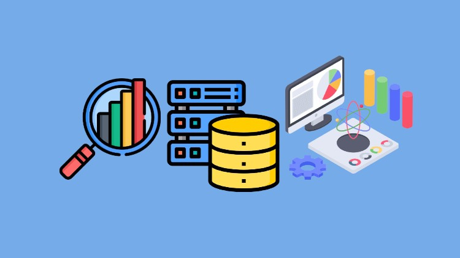
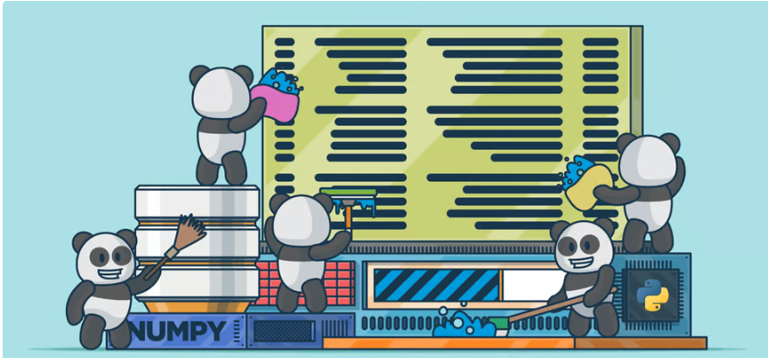
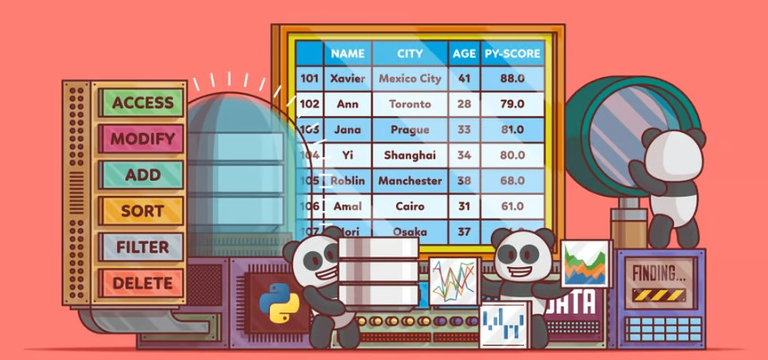
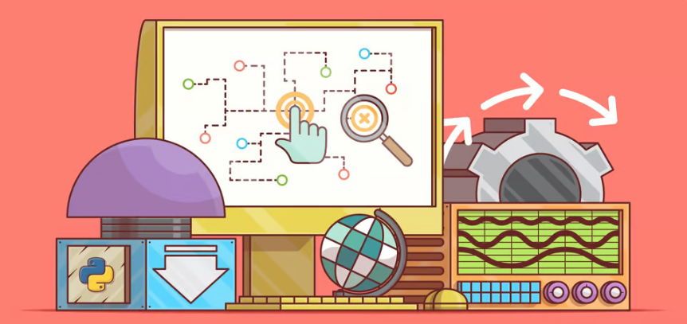
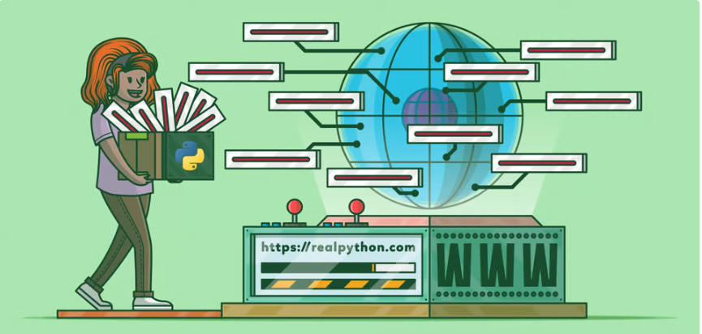

The goal of this project was to clean worldwide company layoffs data from 2020-2023 in MySQL. This includes removing duplicates, standardizing the data, handling null or blank values, and removing unnecessary rows and columns.

The goal of this projct was to do an initial exploration of worlwide company layoffs data from 2020-2023 to gain insight on the nature of these layoffs and identify potential patterns. This project is a continuation of the "SQL: Data Cleaning" project.

The goal of this project was to clean raw customer call data using the Pandas library in Python. This includes removing duplicate and invalid entries, dropping unnecessary columns, and standardizing the data.

The goal of this project was to gain insight on world population data and identify potential patterns. This includes calculating statistical values for all numeric columns (count; mean; std; min; max; 25th, 50th, and 75th percentiles) and visualizing this data in a boxplot. The project also includes a heatmap visualizing the correlation between all numeric columns in the dataset and a line graph visualizing population trends from 1970 to 2022 per cotinent.

The goal of this project was to extract the list of the largest companies in the United States based on revenue from Wikipedia (Link to Wikipedia page). The project uses the "BeautifulSoup" library
to scrape the web page for the desired data. A new DataFrame is then created using this scraped data.

The goal of this project was to scrape the price from an Amazon listing (Link to Amazon listing) and automate this process to extract the price of the item every 24 hours. This project builds on the concepts presented in the "Python: Web Scraping" project and can be later used to visualize the trend of prices over a period of time

The goal of this project was to use an API to pull Crypto data and automate this process to pull data every minute. A catplot was created to visualize the percent change per company over a 90 day period and a line plot was used to visualize the price change (in USD) of Bitcoin over two consecutive pulls (two minutes).

The goal of this project was to create a dashboard visualizing key information about Airbnb data from 2016. The dashboard includes several different types of visualizations that can help potential users gain insight on the best areas, size of accommodations, and time of year for hosting an Airbnb.

The goal of this project was to visualize the results of a survey conducted on 630 data professionals. The dashboard offers several different visualizations that show the average salary per job title, popular programming langauges used, and overall job satisfaction among other information.

The goal of this project was to create a dashboard visualizing bike sales data. This includes bar and line charts visualizing average income of bike purchasers vs non-purchasers by gender and the number of customers per age group and commute distance. The dashboard has the option of toggling the data for marital status, region, and education level for more refined visualizations.